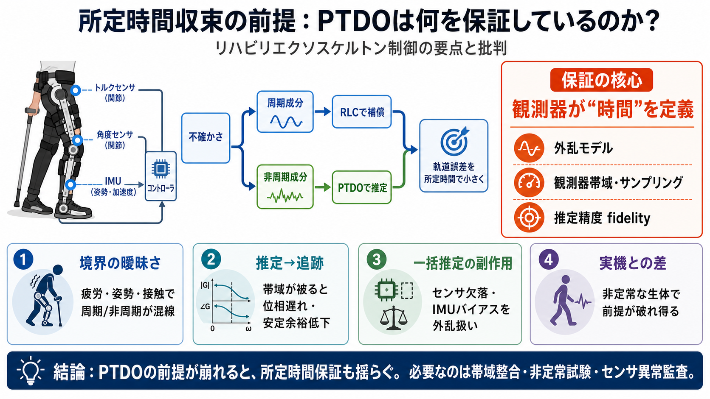

Novel adaptive impedance control for exoskeleton robot for rehabilitation using a nonlinear time-delay disturbance observer
fixed-time controller design. Thirdly, a novel fixed-time filter is proposed to overcome the phenomenon of “differential…

fixed-time controller design. Thirdly, a novel fixed-time filter is proposed to overcome the phenomenon of “differential…
This was done using a rehabilitation robot whereby humans' musculoskeletal conditions were considered. This control sche…
Interaction between the actual human limb and the ex- oskeleton is of course more complex than that of the linear model…
In this work, an ultra-local model-based predefined-time assist-as-needed controller (UPTAC) is presented for a upper li…
In this study, a fuzzy adaptive impedance control method integrating the backstepping control for the PAM elbow exoskele…